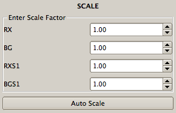
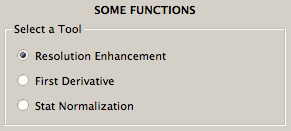
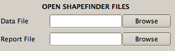
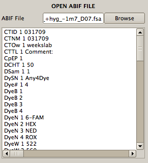

In order to scale the channels, the scale dialog is used. You can enter scale factor manually. Also, 'Auto Scale' button can be used to scale all channels automatically. All channels are scaled to BG channel. After pressing the button, BG will be 1 and the other channel will be scaled to BG.

In order to swap the channel this dialog is used. For each data is asseigned with the current label.
In this dialog, some useful functions are defined. You can apply a function to all channels or any specified channel with all length or partly.

This dialog can be used to read ShapeFinder files. If the last processed lanes was saved as a text file, this file can be read from this dialog. If the data is analyzed completely by ShapeFinder, the report file can be read. After selecting the files, the data is shown. Then, using 'Save Project As' menu, a new project is created and then this project may be used as a Reference project or the QuSHAPE tools maybe applied to analyze further.

ABIF files (*.fsa, *ab1) can be read by browsing the file and the pressing 'Apply' button. The data is drawn in the main window. All information saved in the file is shown in text browser.

Sequence files (*.txt, *seq,*.fasta,*.genbnk) can be read by browsing the file and the pressing 'Apply' button. The sequence can be seen in text browser.